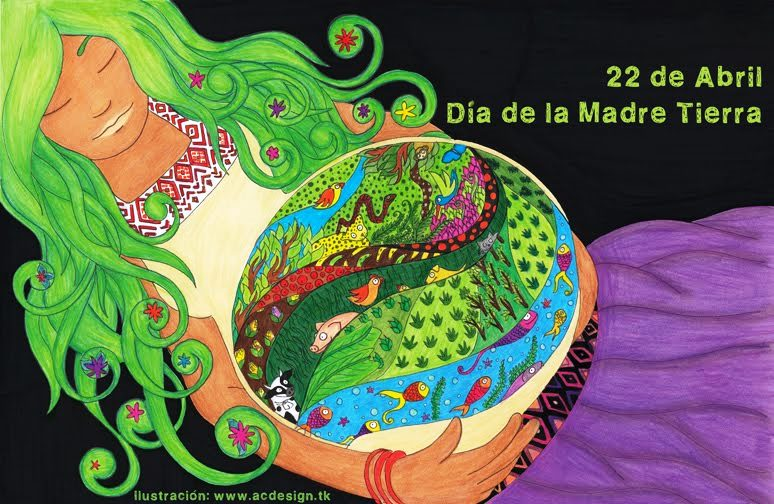
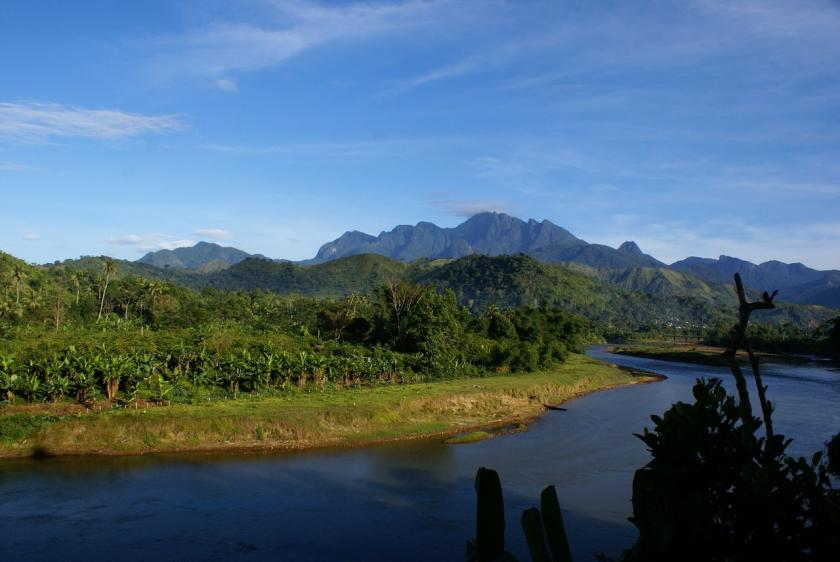

Dia Internacional De La Madre Tierra
Realizado por:
García Serrano Carlos Asaf
4°"H"
Especialidad:
Programación
Submódulo:
Desarrolla Aplicaciones Móviles
Docente:
Lic.José Antonio Gómez Hernández
4°"H"
Programación
Desarrolla Aplicaciones Móviles
Lic.José Antonio Gómez Hernández
Celebramos el Dia Internacional de la Madre Tierra para recordar que el planeta y sus ecosistemas nos dan la vida y el sustento. Con este dia, Asumimos, Ademas, La responsabilidad colectiva, como nos recordaba la Declaracion de Rio de 1992, de formentar esta Armonia con NATURALEZA y la Madre Tierra. Este dia nos brinda tambien la oportunidad de concienciar a todos los habitantes del planeta acerca de los problemas que afectan a la tierra a las diferentes formas de vida que en se desarrollan.
"Madre Tierra" es una expresión común utilizada para referirse al planeta Tierra en diversos países y regiones, lo que demuestra la interdependencia existente entre los seres humanos, las demás especies vivas y el planeta que todos habitamos. La Tierra y sus ecosistemas son nuestro hogar. Para alcanzar un justo equilibrio entre las necesidades económicas, sociales y ambientales de las generaciones presentes y futuras, es necesario promover la armonía con la naturaleza y el planeta. Celebramos el Día Internacional de la Madre Tierra para recordar que el planeta y sus ecosistemas nos dan la vida y el sustento. Con este día, asumimos, además, la responsabilidad colectiva, como nos recordaba la Declaración de Río de 1992, de fomentar esta armonía con la naturaleza y la Madre Tierra.

La Madre Tierra es una expresión común utilizada para referirse al planeta Tierra en diversos países y regiones, lo que demuestra la interdependencia existente entre los seres humanos, las demás especies vivas y el planeta que todos habitamos. Por ejemplo, en Bolivia la llaman «Pacha Mama» y nuestros ancestros en Nicaragua se referían a ella como «Tonantzin». La proclamación (Documento PDF) del 22 de abril como Día Internacional de la Madre Tierra supone el reconocimiento de que la Tierra y sus ecosistemas nos proporcionan la vida y el sustento a lo largo de nuestra existencia. También supone reconocer la responsabilidad que nos corresponde, como se expone en la Declaración de Río de 1992, de promover la armonía con la naturaleza y la Tierra a fin de alcanzar un justo equilibrio entre las necesidades económicas, sociales y ambientales de las generaciones presentes y futuras.
El Día Internacional de la Madre Tierra nos brinda la oportunidad de reafirmar nuestra responsabilidad colectiva de promover la armonía con la naturaleza en un momento en el que nuestro planeta se encuentra amenazado por el cambio climático, la explotación insostenible de los recursos naturales y otros problemas creados por el hombre. Cuando creamos amenazas para nuestro planeta, no solo ponemos en peligro el único hogar que tenemos sino incluso nuestra futura supervivencia. Celebremos este Día Internacional renovando nuestra promesa de honrar y respetar a la Madre Tierra.

La gestión integrada de paisajes requiere comprender los diferentes impactos del uso de la tierra y equilibrar los intereses a menudo contradictorios de los diferentes grupos involucrados. Imaginemos que usted forma parte del gobierno del país X en África subsahariana. Desea cumplir con el Objetivo de Desarrollo Sostenible No. 1 que reza: “acabar con la pobreza en todas sus formas en todas partes". Sin embargo, es consciente de la necesidad de implementar todos los 17 Objetivos, incluido el Objetivo 15, que busca: "Gestionar sosteniblemente los bosques, luchar contra la desertificación, detener e invertir la degradación de las tierras y detener la pérdida de biodiversidad.” Imagine que usted tiene una gran extensión de pastizales secos donde casi nadie vive y quiere explotarlos de mejor manera, en beneficio de su gente.
